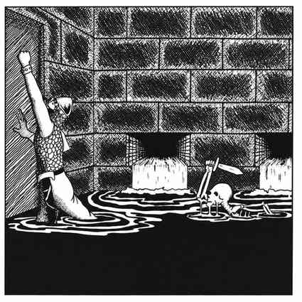

追击与规避追击 · Pursuit and Evasion of Pursuit

追击与规避追击分为两种情形：地下环境与户外环境。各自有特殊情况，因此分开处理。
本节内容
上一节：士气分数 · Morale Scores
下一节：地下环境中的追击与规避 · Pursuit and Evasion in Underground Settings

追击与规避追击分为两种情形：地下环境与户外环境。各自有特殊情况，因此分开处理。
本节内容
上一节：士气分数 · Morale Scores
下一节：地下环境中的追击与规避 · Pursuit and Evasion in Underground Settings